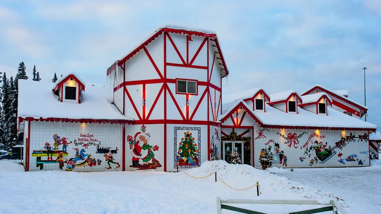
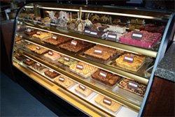
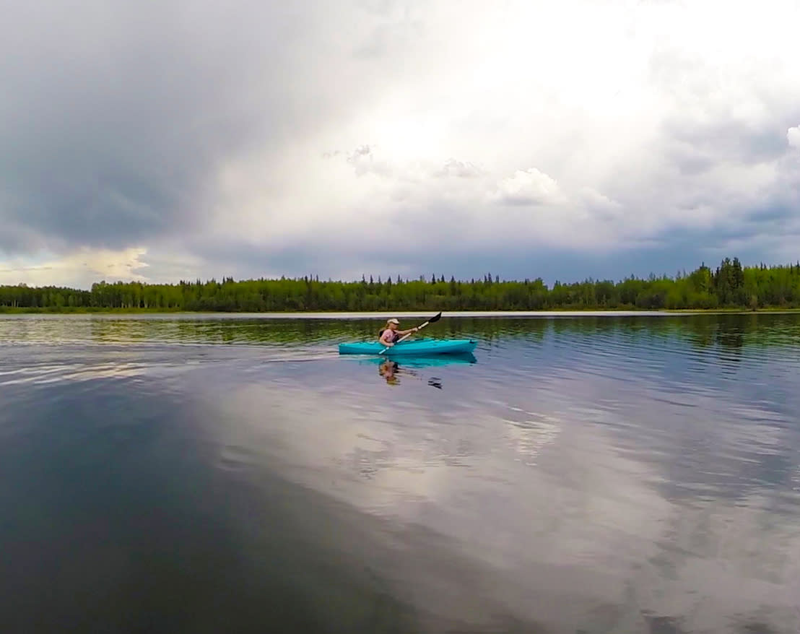
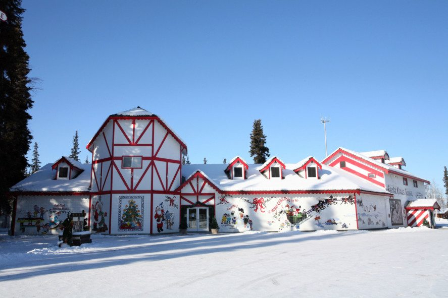

Alaska: North pole

While larger cities like Fairbanks have festive holiday celebrations, nothing can top the Christmas cheer of North Pole, Alaska, home to its own version of Santa's workshop. It's Christmas here all the time, so kids can meet Kris Kringle and his reindeer year-round.
Since 1952, Santa Claus House has put smiles on the faces of millions of visitors from all over the world. Inside the world famous Santa Claus House you'll find the perfect gift or keepsake for all ages and occasions. Browse an amazing assortment of Christmas decor and ornaments, exclusive North Pole apparel, collectibles, made in Alaska items, as well as a selection of unique toys. Be sure to ask about the Original Letter from Santa while you're here.

Enjoy a delicious piece of fudge, coffee, cookies, chocolates, or candy from The Sweet Shop while you browse, and remember to bring your camera for some memorable photos. A variety of unique photo opportunities and special displays are available throughout the building. Of course, don't forget to have your picture taken with the jolly man himself.
Outside, have a seat in Santa's sleigh, which is parked just in front of the World's Largest Santa - a larger-than-life three dimensional Santa statue standing nearly 50 feet tall. A variety of murals and exciting display windows adorn the front of the building, and other great surprises abound across the property. After you've selected the perfect gift, mail your cards and letters to friends and family back home from right here at Santa Claus House to receive a genuine North Pole postmark.

Chena Lake Recreation Area
Right next to North Pole is the beautiful Chena Lake Recreation Area that covers 2,100 acres and includes the popular Lake Park, with a 260 acre lake and the River Park, which meanders along 4 miles of the Chena River. During summer and fall, potable water and restroom facilities are available. The Lake Park has volleyball, horseshoes, a playground, picnic areas with tables and fire rings, covered pavilions, a campground, two designated swimming areas with sandy beaches, a boat rental facility and a lake boat launch as well as two fishing docks (one handicap accessible). The River Park has additional camping, activity and picnic areas. Chena Lake is stocked annually by the Alaska Department of Fish and Game with rainbow trout, silver salmon and Arctic char. The Chena River has Arctic grayling, northern pike, whitefish, burbot and an annual run of king salmon. During Aurora Season, from August 21 to April 21, the Chena Lake Recreation Area is a great place to hunt for the aurora. During the winter, Chena Lake Recreation Area has ice fishing and miles of trials for hiking and cross-country skiing, snowmobiling, skijoring and dog mushing.

Santa Claus House
It’s Christmas year-round in North Pole, Alaska—just 20 minutes away from Fairbanks. You’ll find candy canes painted on city streets and holiday parades in July. And at the hub of the festivities is Santa Claus House, a frontier general store and post office turned holiday shop. The postal tradition lives on—official Letters from Santa are postmarked from the North Pole and stamped with an official Santa seal. And today, the store includes live reindeer, a coffee shop, holiday gift items, the world’s largest Santa statue and, in summer months and over holidays, Santa himself.
Christmas in July (or June, or Anytime)
A regular stop for bus tours and independent travelers (there are shuttles from all Fairbanks hotels), the Santa Claus House has become an Alaska destination. Not only is it a year-round holiday here, but there’s an incredible inventory of holiday-themed items in the 9,000 square feet of retail space: Alaska-themed ornaments, Made-in-Alaska gifts, jewelry, sculptures, clothing, and toys for children, many of which are Santa Claus House exclusives.
Letters from Santa
The most popular offering, though, is the Letter from Santa, a tradition that’s been around since 1952. Every Christmas, the Santa Claus House receives hundreds of thousands of letters from children around the world. During your visit, you can order a letter sent to your child or grandchild. Each letter includes a note on stationery (unchanged since the 1960s), a Santa Claus dollar, a photo of Santa, and a sticker reading “I’m on Santa’s Good List.” You can even purchase the deed to one square inch of the North Pole.
Visitors come as much for the experience as the shopping. There are parades and fundraisers like “Jingle in July” or “Cruising with Santa.” Even if there’s not a special event happening during your visit, there’s always plenty going on. Have your photo taken with Santa, or take pictures beside the 50-foot tall Santa statue. You’ll also find holiday murals that cover the building, a giant sled, and even a short walking path through the woods.
Fabulous Ice Art
There are also cool activities for anyone coming to Fairbanks during winter’s aurora-watching season. Starting in Late November, you can come check out the “Christmas in Ice” exhibit, an ice sculpture contest that draws in ice artists from around the world, and involves both chainsaws and about 600 tons of North Pole ice (one year's winner featured Santa surfing a wave). Ice art spectators can also find their way through an ice maze or ride down an ice slide. The exhibit stays up throughout December—and plenty of folks even make this a destination on Christmas Day.